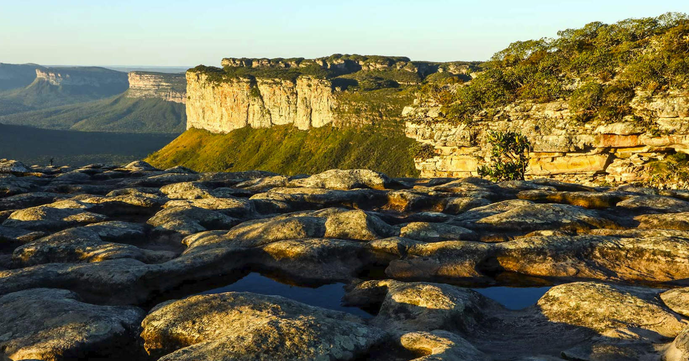
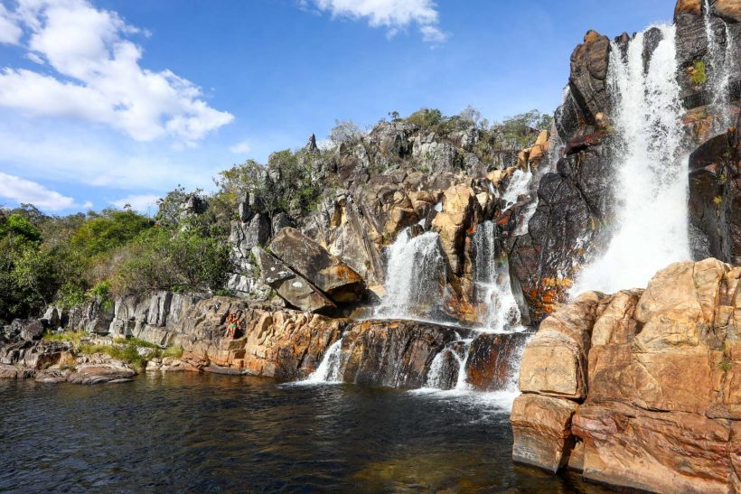
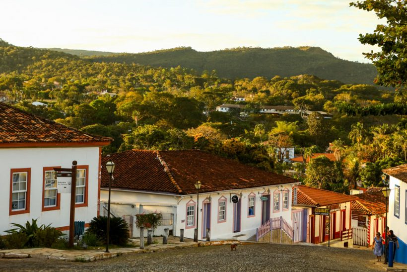
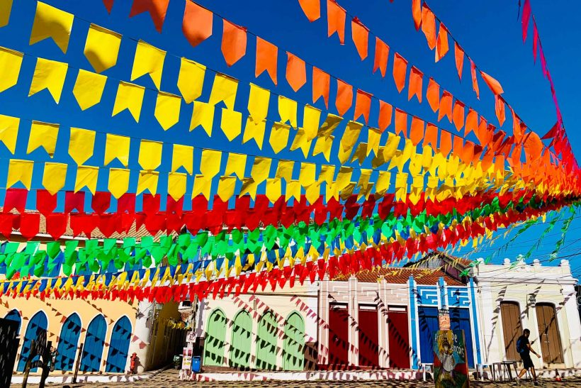

Top 5 lugares para você conhecer no Brasil: os destinos que você precisa conhecer!

Lugares para viajar no Brasil é o que não nos falta! Nosso país tem uma diversidade maravilhosa, paisagens deslumbrantes e cidades que oferecem as mais variadas qualidades. Alguns destinos se destacam por sua boa estrutura e outros por sua grande quantidade de atrativos, e com tantas opções sempre haverá um novo destino no país para explorar e se apaixonar.
Em meio a tantos lugares maravilhosos para viajar, fica até difícil escolher os melhores, por isso que nossa lista dos 50 melhores lugares para viajar no Brasil é baseada no Prêmio Melhores Destinos, com dados das respostas de quase 15 mil leitores. E o mais importante: cada um deles só avaliou o destino que visitou!
Confira essa lista imperdível de melhores destinos em cada região do Brasil e já escolha o próximo para a sua viagem!
1 – Bonito, Mato Grosso do Sul

Excelente para quem busca contato com a natureza, Bonito é o lugar perfeito para quem quer contato com a natureza e uma boa dose aventura! A cidade tem um ritmo de cidade de interior e dezenas de passeios para fazer, que incluem flutuação em rios cristalinos, caminhadas e banhos de cachoeira. Tudo é feito de forma bem organizada e de maneira a preservar o meio ambiente.
2 – Chapada dos Veadeiros, Goiás

Uma das cidades para se ter como base para visitar a Chapada dos Veadeiros, em Goiás, é a pequena Alto Paraíso. Pequenina e simpática, ela é uma cidade simples, mas com várias pousadinhas, casas para alugar e bons restaurantes. A partir de lá você pode ir de carro para dezenas de cachoeiras incríveis, com os mais diversos cenários, fazer trilhas, voar de balão, além de observar a fauna e flora locais, que são encantadoras!
3 – Pantanal

Um lugar tão bonito que virou cenário de novela! O Pantanal é uma das áreas naturais mais ricas do Brasil! Dentre as principais atividades no Pantanal, o visitante pode fazer canoagem e observação de aves, fazer trilhas e safári de fotos, tomar banho de cachoeira e de rio, ver peixes nas águas transparentes do Rio Salobra, cavalgar, pescar e até viver “um dia de pantaneiro”, que inclui aprender a laçar e conduzir uma boiada (dá para acreditar?).
Ah, e tem mais! Imagina ver uma onça-pintada ou jacarés no próprio habitat? Pois é, isso é possível no Pantanal, por exemplo, durante os passeios de barco e expedições específicas. Outra atração é poder ver o encontro das águas claras do Rio Salobra com as águas barrentas do Rio Miranda, no Mato Grosso do Sul.
4 – Pirenópolis, Goiás

Apenas “Piri” para os mais íntimos, Pirenópolis é uma cidade pequena, com ruas de pedra, muito frequentada nos fins de semana, e tem uma arquitetura charmosa com casarões coloniais em seu centro histórico. É uma cidade com várias cachoeiras ao seu redor e uma excelente estrutura para quem quer ficar bem hospedado, com diversas opções de pousadas charmosas. Muitas pessoas que vivem em Brasília procuram Piri quando querem relaxar e curtir novos ares.
5 – Chapada Diamantina, Bahia

Lençóis é o nome da cidadezinha mais indicada aos que desejam conhecer as belezas da Chapada Diamantina, na Bahia. Com ruas de pedra e enorme quantidade de atividades, é o destino ideal para quem procura contato com a natureza e quer se desligar das grandes cidades, com direito a mergulhos em cachoeiras refrescantes, passeios por trilhas e um bom acarajé no fim da tarde!
Vale lembrar que a Chapada Diamantina foi a bicampeã entre os melhores destinos do Brasil na avaliação de nossos leitores, um ótimo indício de que Lençóis tem tudo para ganhar o seu coração.